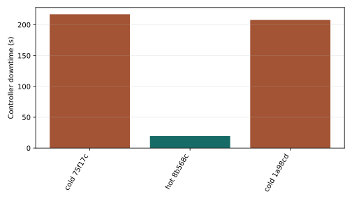
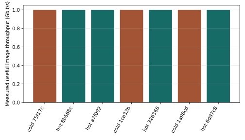
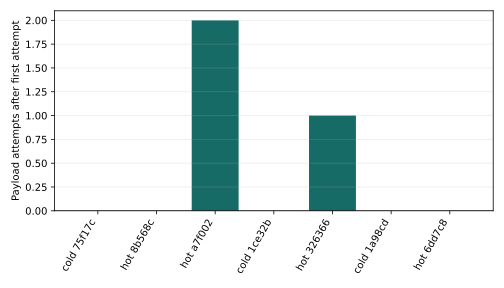
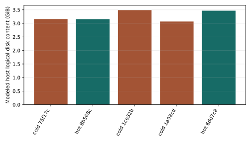
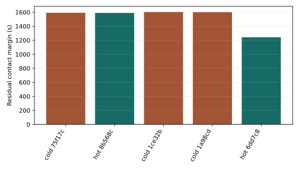
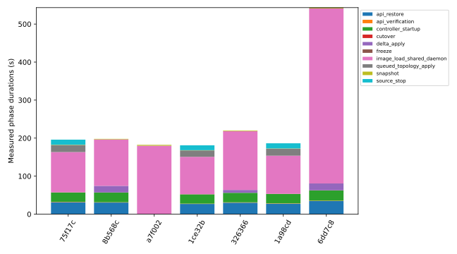

Prove principali registrate: 0/18. Una replica per caso rappresentativo.
Representative cases with one replica per combination; no statistical significance claim
| run_id | purpose | method | configured_rate_bps | outcome | controller_downtime_s |
|---|---|---|---|---|---|
| run-07c7984b11564821b34cd69bd175f17c | calibration | cold | 1000000000 | success | 217.09736650018021 |
| run-0a3533e9251349d69b907bf4028b568c | diagnostic | hot | 1000000000 | success | 19.526700699934736 |
| run-1bc9af6c40c84125b83f49d617a7f002 | diagnostic | hot | 1000000000 | interrupted | — |
| run-61e84292895a4fcfa7074c1d121ce32b | calibration | cold | 1000000000 | success | 205.64706850005314 |
| run-66e845cdd42c414aab7395b42928ad85 | calibration | cold | 1000000000 | interrupted | — |
| run-bd559578930c4799b7c2e12afe326366 | diagnostic | hot | 1000000000 | interrupted | — |
| run-be3c5a3f29484ae0b15a71b1ec1a98cd | diagnostic | cold | 1000000000 | success | 207.80457739997655 |
| run-c680093ed93447bcb7a5b6323c6dd7c8 | diagnostic | hot | 1000000000 | success | 20.93632660014555 |





